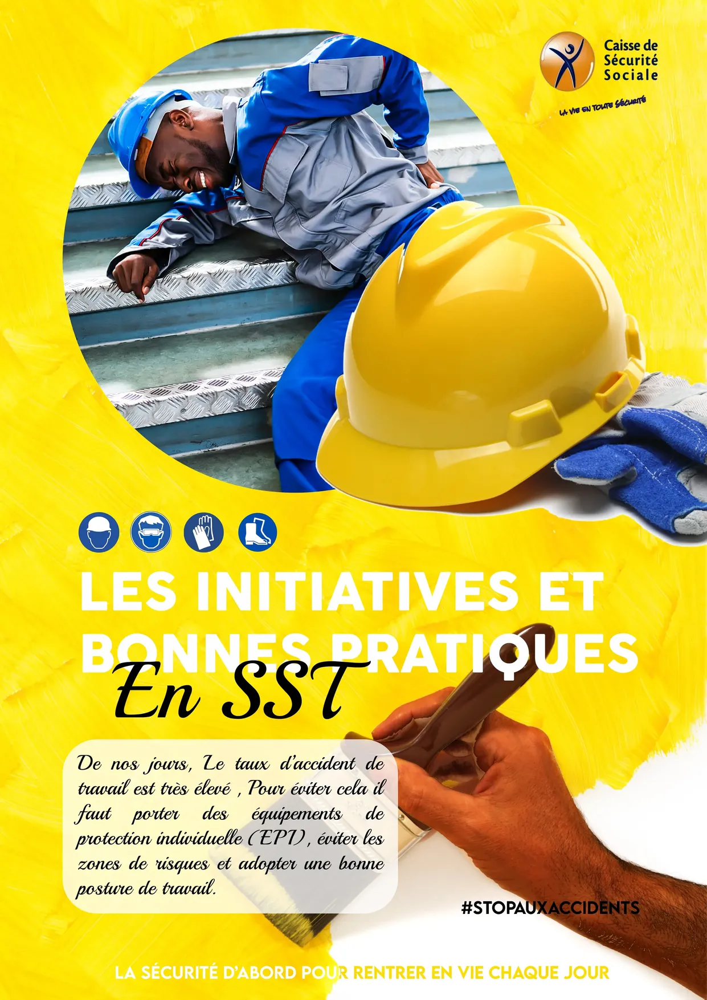

Affiche Caisse de Sécurité Sociale - Prévention SST

Cette affiche de sensibilisation de la Caisse de Sécurité Sociale du Sénégal fait partie d'une campagne de prévention des accidents du travail. Avec le hashtag #STOPAUXACCIDENTS et le slogan "La vie en toute sécurité", elle vise à promouvoir le port d'équipements de protection individuelle (EPI) sur les chantiers et lieux de travail.
Composition dramatique
L'affiche utilise une mise en scène réaliste et émotionnelle :
Image principale (cercle en haut) :
Un travailleur en tenue bleue et grise est allongé sur des marches métalliques, tenant sa jambe dans une posture de douleur évidente. Cette photo choc ne montre pas de blessure graphique, mais la souffrance est palpable. C'est un choix intelligent : assez fort pour marquer les esprits, mais pas trop violent pour être diffusé largement.
Premier plan (bas de l'image) :
Un casque de chantier jaune vif abandonné au sol, symbolisant que l'accident aurait pu être évité si l'EPI avait été porté correctement.
Arrière-plan (main tenant un pinceau) :
Une main noire tient un pinceau en train de peindre, suggérant une activité de travaux de peinture en cours. Ce détail narratif ancre la scène dans un contexte professionnel réel de chantier et rappelle que les accidents arrivent pendant les tâches quotidiennes les plus banales. Le pinceau abandonné ou encore tenu évoque l'interruption brutale du travail par l'accident.
Palette de couleurs institutionnelle
- Jaune vif (#FFEB3B) : Attention, alerte, visibilité (couleur des EPI)
- Bleu cobalt (#1565C0) : Professionnalisme, confiance, institution
- Blanc (#FFFFFF) : Clarté, sécurité, propreté
Le fond jaune saturé attire immédiatement l'œil et évoque les panneaux de signalisation de sécurité.
Icônes EPI (en haut, dans des cercles bleus) :
Quatre pictogrammes blancs représentent les équipements obligatoires :
- Casque de protection
- Lunettes de sécurité
- Gants de travail
- Chaussures de sécurité
Ces icônes normalisées sont universellement reconnaissables.
Message principal (en blanc sur jaune) :
"LES INITIATIVES ET BONNES PRATIQUES En SST"
SST = Santé et Sécurité au Travail
Texte explicatif (en script noir élégant) :
"De nos jours, Le taux d'accident de travail est très élevé, Pour éviter cela il faut porter des équipements de protection individuelle (EPI), éviter les zones de risques et adopter une bonne posture de travail."
Ce texte pédagogique en français accessible explique clairement les trois piliers de la prévention :
1. Porter les EPI
2. Éviter les zones dangereuses
3. Adopter les bonnes postures
Hashtag militant (en noir) : #STOPAUXACCIDENTS
Ce hashtag transforme la campagne en mouvement social, encourageant les travailleurs à partager leurs propres expériences et à devenir ambassadeurs de la sécurité.
Logo et slogan de la Caisse (en haut à droite) :
Le logo de la Caisse de Sécurité Sociale montre une silhouette humaine stylisée en mouvement dynamique (en jaune/orange), symbolisant la vitalité et la santé préservée.
Slogan : "La Vie en toute Sécurité"
Ce slogan positif recentre le message : la sécurité n'est pas une contrainte, c'est un moyen de profiter pleinement de la vie.
Bandeau bas (en blanc sur jaune) :
"LA SÉCURITÉ D'ABORD POUR RENTRER EN VIE CHAQUE JOUR"
Ce message émotionnel rappelle que derrière chaque travailleur, il y a une famille qui attend son retour sain et sauf.
Public cible
- Travailleurs du BTP (bâtiment et travaux publics)
- Ouvriers industriels
- Employeurs et chefs de chantier
- Inspecteurs du travail
- Syndicats
Canaux de diffusion
- Panneaux d'affichage près des chantiers
- Affiches dans les vestiaires et bureaux
- Réseaux sociaux (format optimisé)
- Brochures de formation SST
- Interventions dans les entreprises
Impact psychologique
L'affiche utilise la peur (l'accident) suivie de la solution (les EPI) et de l'espoir (rentrer en vie). Cette structure narrative classique est efficace en communication de prévention.
© 2025 by Frenzy Design